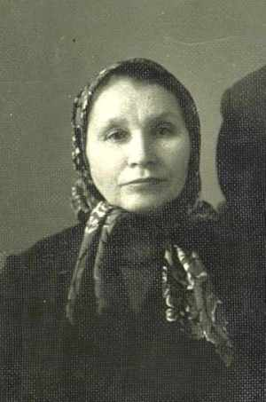
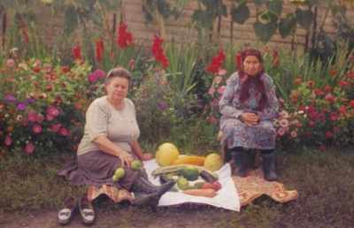

Лысенко (Палий) Мария ГригорьевнаРодилась 16.07.1912 в д.Алферовка, Купинский р-н, Новосибирской обл., Россия. В 1933 вышла замуж за Лысенко Василия Григорьевича. Работала дояркой в колхозе. |

1966г. Мария Григорьевна (справа) вместе с дочерью Надеждой, с.Метелишки, 2000г. |
|
Родители:
Братья/Сестры:
Дети:
|